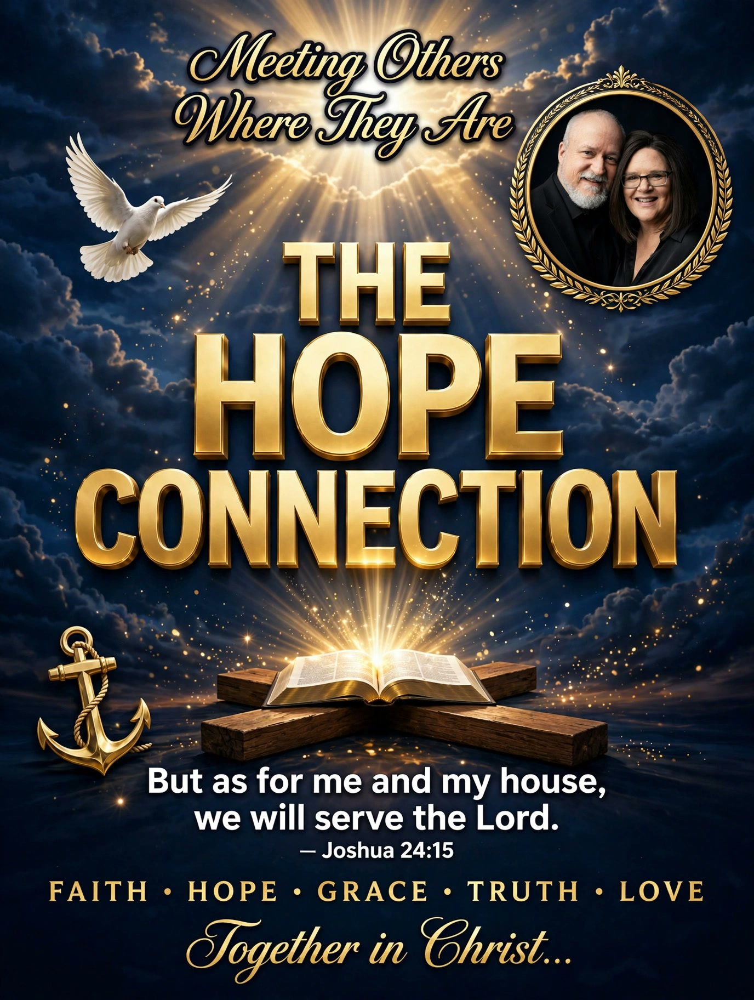

I'm Lewis Fuller, host of The Hope Connection. This is what I believe, and what this ministry stands on.
1. The Scriptures
The Bible, all sixty-six books of the Old and New Testaments, is the inspired and inerrant Word of God — our supreme and final authority in all matters of faith and life. "All Scripture is breathed out by God" (2 Timothy 3:16, ESV).
2. The Triune God
There is one living and true God, eternally existing in three persons — the Father, the Son, and the Holy Spirit — one in essence, equal in power and glory. The Father planned salvation from eternity, choosing a people for Himself (Ephesians 1:4). The Son accomplished it — the eternal Word made flesh (John 1:14). The Holy Spirit applies it, giving new birth and sanctifying believers day by day (Matthew 28:19).
3. Jesus Christ
Jesus Christ is fully God and fully man: conceived by the Holy Spirit, born of the virgin Mary. He lived a sinless life, died on the cross as the substitute for sinners, rose bodily from the dead, ascended into heaven, and will return in glory. "The Word became flesh and dwelt among us" (John 1:14, ESV).
4. Mankind and sin
All people are created in God's image yet fallen in Adam — "for all have sinned and fall short of the glory of God" (Romans 3:23, ESV) — dead in trespasses and sins, unable to save themselves.
5. Salvation
Sinners are justified before God by His grace alone, through faith alone, in Christ alone — not by works, so that no one may boast. "For by grace you have been saved through faith… it is the gift of God, not a result of works" (Ephesians 2:8–9, ESV).
6. The new life
Those united to Christ by faith are indwelt by the Holy Spirit and grow in holiness — good works as the fruit of salvation, never its root. "For we are his workmanship, created in Christ Jesus for good works" (Ephesians 2:10, ESV).
7. The Church
The Church is the body of Christ, called to worship God, build one another up, and proclaim the gospel to all people — meeting others where they are in the Name of Jesus. "that you may proclaim the excellencies of him who called you out of darkness into his marvelous light" (1 Peter 2:9, ESV).
8. The blessed hope
Christ will return, the dead will be raised, and all who trust in Him will dwell with God forever. "We have this as a sure and steadfast anchor of the soul" (Hebrews 6:19, ESV).
No judgement, real hope — come as you are, leave anchored. Soli Deo Gloria.